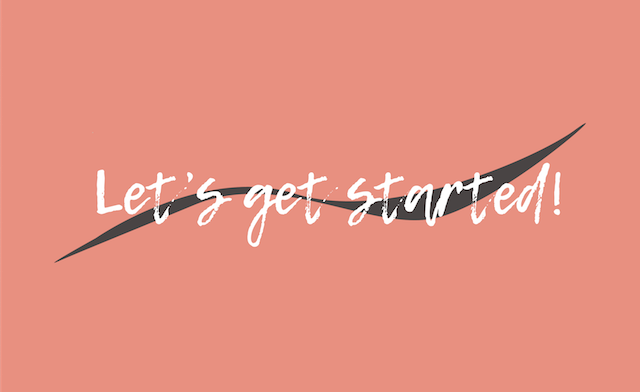
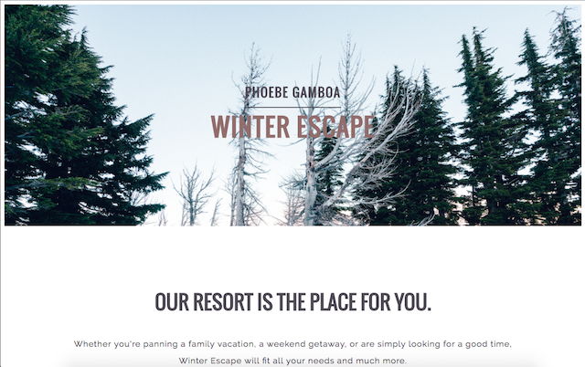

My Work
Photoshop Manipulation

During this unit of Fall 2014 school year, we were starting our Photoshop unit in our Graohic Design class. We were able to bring in our own picture as well as find a picture online to be able to manipulate colors with. So on the right you can see I used a black and white image of my parents at their wedding and on the left you can see a picture I found. Learning these basic skills and bein gable to apply them is what has helped me expand my knowledge on phototshop as well as help me earn my certification in the program.
Eduguide Challenge Video
This video was my submission to the Eduguide Challenge in Fall 2014 of my freshman year. In this project, we had to reflect on who we wanted to be in life and explain why in our short video. We also focused on how we can encourage other so aspire to be who and what they want to be. After the sumission I was informed soon after that I was a runer up in the competition as well as severa other people from our school and it was a very enjoyable and honoring experiene altogether.
Spanish/Web Design Collaboration Project
This project was in collaboration with all the Spanish 2 students at our school. During the Spring 2016 semester the web design students and spanish students worked together to create a website on a specified South American region. The spanish students were responsible for providing the content for our websites, and we were to create a website reflecting on the content they gave us. The collaboration did have its imperfections, but it was a great experience and I felt really helped me understand the relationship between a client and developer.
Self Portrait
In the Fall 2014 semester, we were given an assignment in Graphic Design to take a self portriat of ourselves and recreate it in Adobe Illustraitor. I thought this project was extremely interesting because we are all so familiar with our own faces but when it came to making it from stratch to make sure every detail was put in to make it resemble us using a program was very challenging. The project ended up being a success and even though I could do better now, it was definately good to have as practice and as al learning pprocess.
Artist Reflection
For our final exam in my Graphic Design class in the Spring 2016 semester, we were assigned to find an artist and create a project or vvideo explaining who that person was and how we can be inspired by this person to go out and do something to conribute to the word and apply our persons form of art. I chose a photographer, Nick Onken, who really inspired me to find my style in my photography, and the project couldn't be more perfect because I had already planned a photoshoot for my friends and their prom. I enjoyed beiang able to apply what Nick Onken taught me, in my own work.
Livit App
In the Fall semester of 2016, we were given an assignment to create and app and a lesson plan that we would be using to teach kids in middle school and elementary school how to create their own app. The Project turned out very successful for my group and other groups. It helped improve our communication skills and teaching means you need to understand the concept behind what you're teaching and I think that was beneficial for me.
Spanish Present/Past Tense Video
In my Spanish 2 class of Spring 2016, we were assigned a project to make a video displaying the use of present and past tense verbs. My group and I came up with a fun little skit to display that and I gave me a better understanding on my knowledge in Spanish when it came to verb tense.
Revolutionary
In the Fall semester of 2015, we were given a project in World History to research a revolitionary and revolution and my partner and I were given Simon Bolivar. We used our knowledge and resources to gather information and displayit onto an infograph. Making a research project that wasn't in essay form was a nice break and gave me a different perspective when conducting research on a topic.
Gender Inequality Parody Video
For a final exam in the Spring 2016 semester, we were given an assignment to choose a topic that affects the world and create a video using ehtos, pathos, and logos to get our topic across. My group chose to use parody to relay our message across to viewers and it turned out to be a success. The project gave me a better understanding of how much the elements of persuadsion can affect how you project a topic or item to people.
Caricature

In the Fall 2014 semester, we were just starting to get our hands on Adobe Illustrator as incoming freshmen and one of our first assignments was to apply the caricature art style into our own art and our own faces. This helped expand my knowledge and understanding on the program and was very beneficial to my growth considering I've never used the program during that time period.
Design Firm Logo
In my Graphic Design 2 class during the Fall 2016 semeser we were put into groups of for and were expected to work as a design firm and our fist project was to create a logo for our firm that represented who we were as designers and our mission statement. This is the logo that I came up with that did get a lot of good feedback but as a team, we still had to decide on one that best represented Aligned Design. This give me insight into what things might be like in the future when it comes to collaboraive work inside of an actual work environemt.
Pasteurization Logo
In Fall 2016, in my US History class, we had to work in groups to create a business pitch explanining why you should invest in our invention. We chose to represent pasteurization my Louis Pasteur, and this is the logo I created as part of our visual presentation. It was interesting to be able to present a part of history as a present role.
Pasteurization Logo
This project was completed this Fall 2017 semester. This is a website I made for a ski resort. This asignment was given to us for us to learn to make our websites responsive. Learning this skill is something that I think is very important for a developer to understand and I am proud of the results that I recieved.
EOC Website Banner Ads
One of my most recent works are these banner ads. In Wedb Design, we were gien assignment to create a website to help the coming gnereations of our school with their EOC exams. Part of the assignment was to create banner ads for our site and as the person from our group that was in charge of graphics, I created these four banner ads. I am most proud of the use of silhouette in my designs to show that we are an education based site.
Equal Pay Act
This video was created for our US history class. My partner and I were assigned to cover the Equal Pay Act of 1963. We were to explain why and how the act was made, who was involved, and how it related tot eh Civil Rights Movement of that time. To explain this act we made a video that was like a "draw my life" where we used pictures and a minimal amount of words to present out topic.
EOC Website Logo
As part of the most recent EOC website we completed, we were also required to create a logo. This is one that my teammate made to represent our site that was called "Save the Grade".